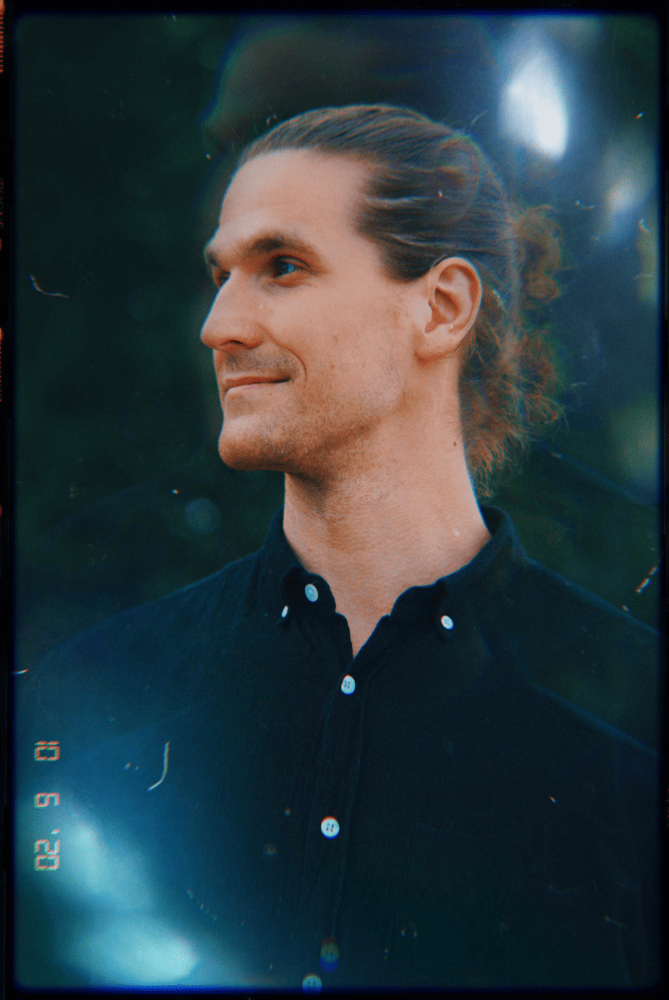

Hello. I'm Mattis. I help individuals and teams express their authentic self, reach their highest potential and create something that makes the world better.
Spotify, Klarna, PayPal / iZettle, GE Healthcare, 3, Ericsson, and 40+ more.
From Boston to Brighton, Stockholm to Palo Alto — I've worked wherever I'm needed, in person or remote.
Whether I’m working with individuals or teams, the goal is the same: to unlock authentic presence, clarity of purpose, and the courage to act on it. My approach blends practical coaching with deeper transformational work, drawing on psychology and wisdom traditions to support the path forward.
The outer work follows.
This is for those ready to journey beneath the surface, where real change begins.
“Mattis supported me early in my transition into engineering leadership. His presence and guidance helped me understand how to build teams that actually work. Grounded, thoughtful, and clear.”
— Tech lead, product company
“Mattis creates a space where growth happens—not just productivity, but actual mental clarity. What surprised me most was how the work stayed with us long after the session ended.”
— Senior leader, engineering org
“Mattis held a workshop around stress and mindfulness that was insightful, relevant, and surprisingly grounded in our real day-to-day. We left with tools but also a new language to talk about how we work.”
— People lead, telecom industry
Curious for more? See additional testimonials on LinkedIn.
| Team workshop (3h) | 3000 €/$ |
| Coaching arc (3 sessions) | 900 €/$ |
| Nature retreat (3 days) | By request |
VAT and travel expenses are not included.
Non-profits get a 50% discount.
These are starting points. If you're looking for something deeper, ongoing work like a team journey, or something entirely different, just reach out.
Not sure yet? Email me with a question or thought.
Presence, authenticity, co-creation.
Some things I’ve made or been part of, for anyone curious.
✶